A multi-agent control plane for autonomous server patching.
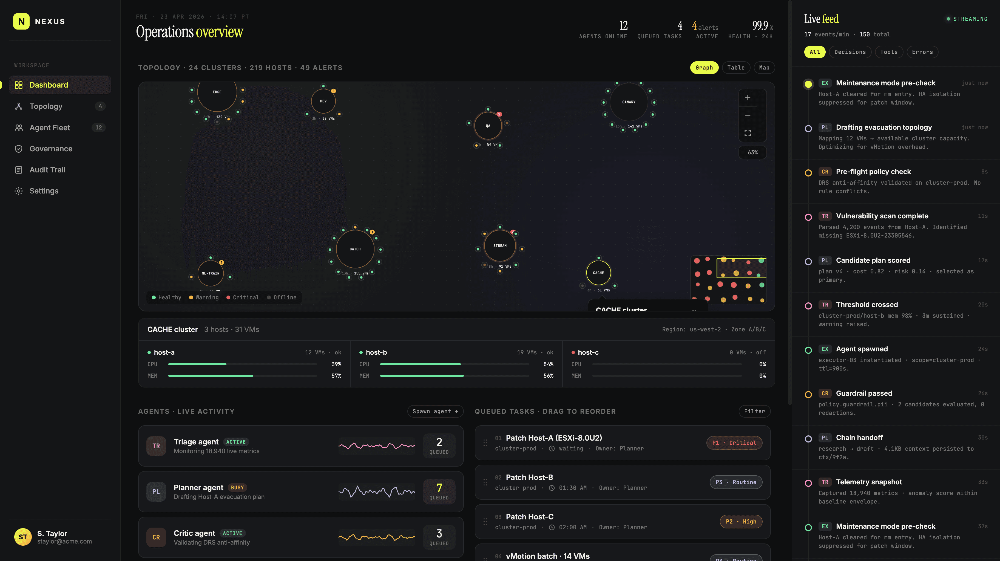
Enterprise patching is a high-stakes manual bottleneck.
Patching servers at scale forces infrastructure teams to balance critical security updates against the risk of system downtime. Operators navigate disparate tools across thousands of nodes, where failure means executing high-risk operations manually under tight maintenance windows — and diagnosing every error themselves.
From manual execution to autonomous orchestration.
Nexus reframes patching as a coordination problem solved by AI agents. Dependency mapping, staggered rollouts, and node-by-node verification run autonomously — but the operator stays in the loop at moments of real consequence, with escalation designed to surface in the UI for human review and approval.
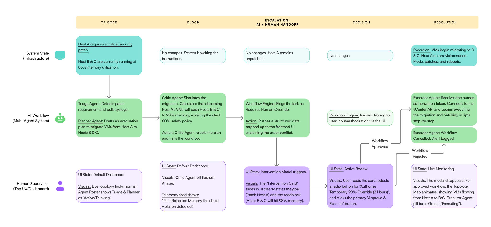
Structural skeleton, before content.
Before any visual decisions, I sketched four states as low-fidelity wireframes: the resting dashboard, the attention lane, the escalation modal, and a migration in motion. No language, no content — just where each thing lives and how state changes are depicted. These artifacts became the brief I handed to Claude Design.
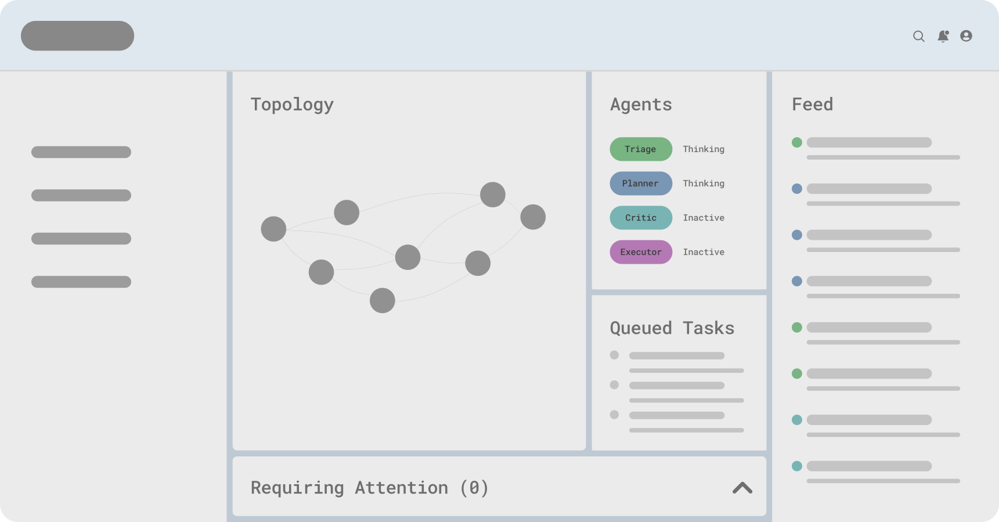
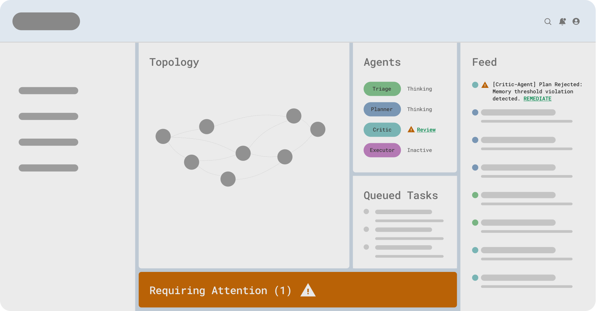
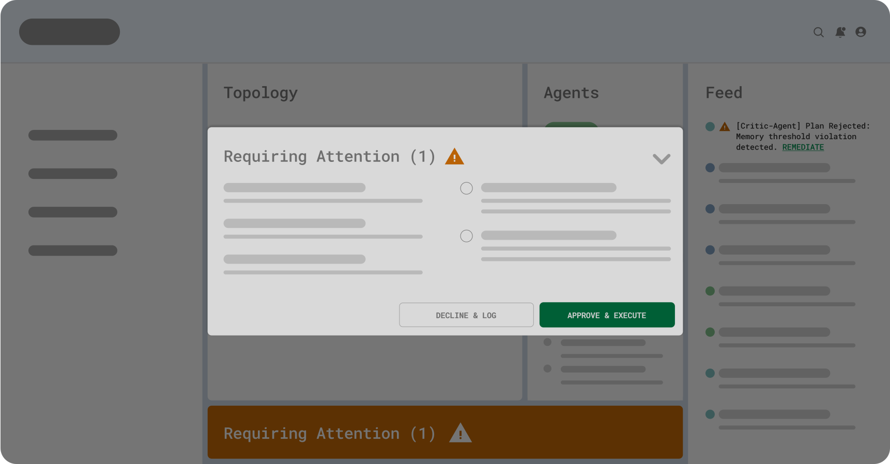
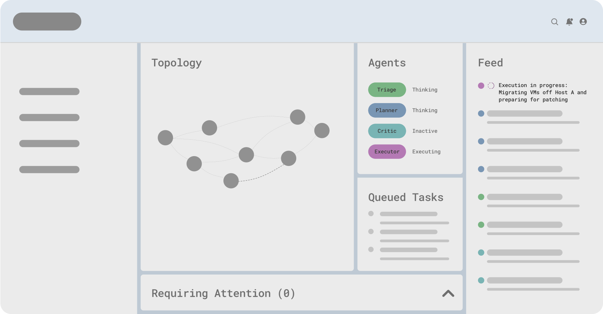
Claude Design returned higher-fidelity wireframes from these sketches. I redesigned several of them by hand to ensure details were captured correctly and to fix layout issues.
One screen. Five coordinated panels.
The operator's primary surface anchors on a central Topology for live host and cluster state, with the Agent Roster, Queued Tasks, Live Feed, and a Requires Attention lane along the bottom. Every signal needed to read the system sits on one screen.
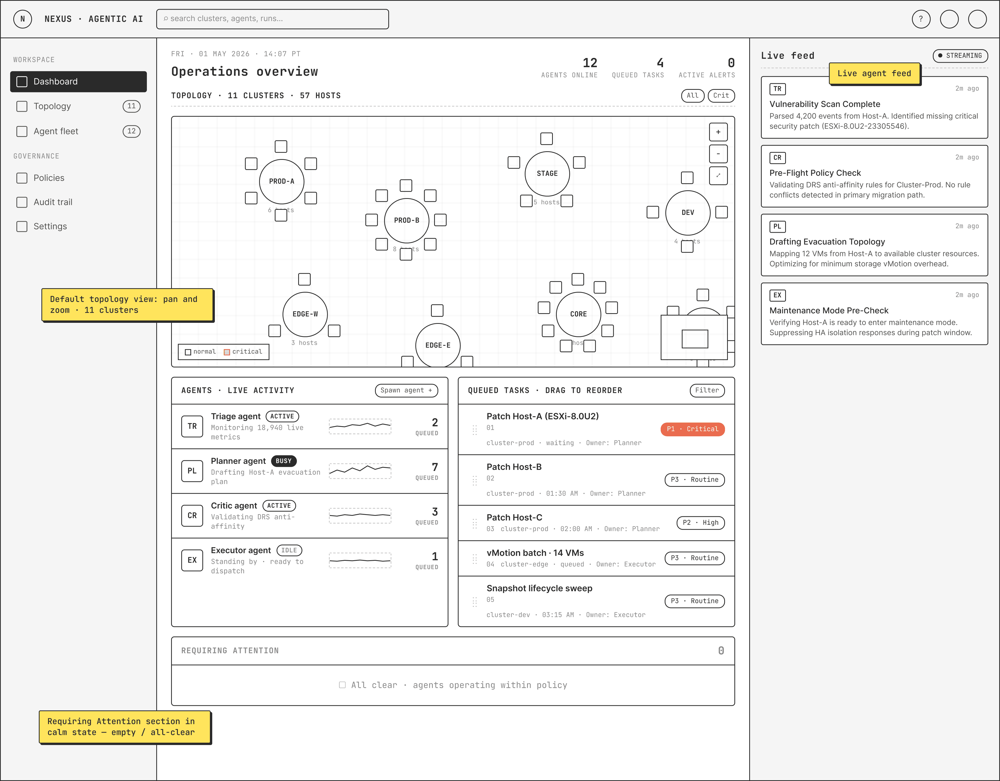
Friction designed for moments of consequence.
When the Critic Agent detects an anomaly during the patching process, it deliberately halts. A "Requires Attention" lane lights up at the foot of the dashboard, and a modal forces explicit human authorization before any irreversible step. Friction here isn't a UX bug — it's the product.
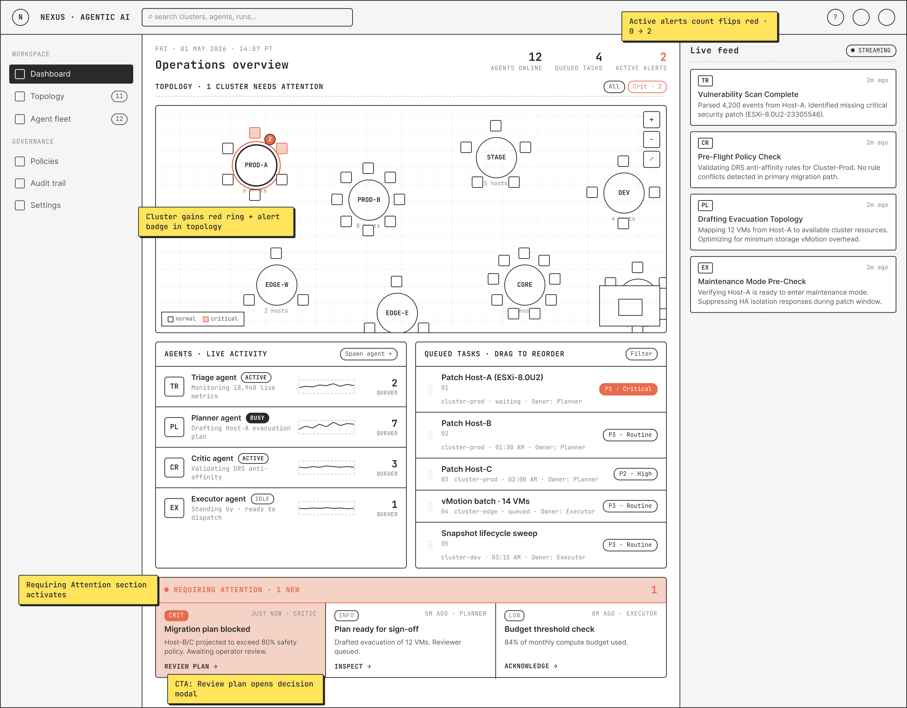
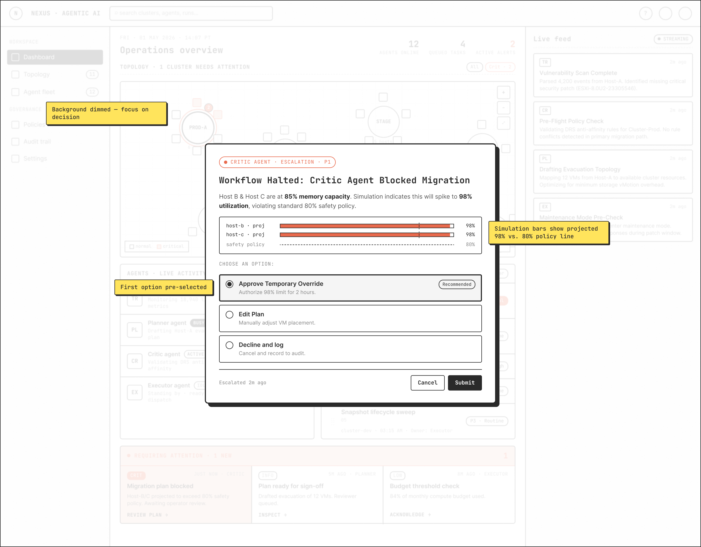
Visible movement, host by host.
Once authorized, the orchestration proceeds visually. Workloads animate across the topology showing VM migration from host-a to host-b, so the operator can see exactly which cluster was memory-constrained, and required an explicit authorization to allow patching to proceed.
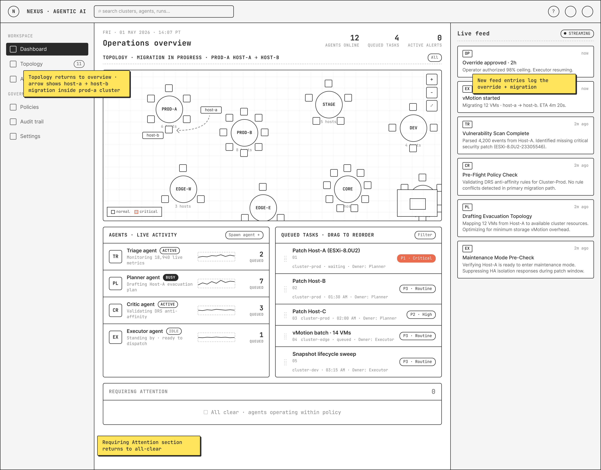
From refined wireframes to a working hi-fi prototype.
With the structure resolved, I directed Claude Design through another pass — this time producing the final visual treatment and a working interactive front-end. Login, dashboard, escalation, and live migration animations all became clickable in a single environment, with motion, color, and density.
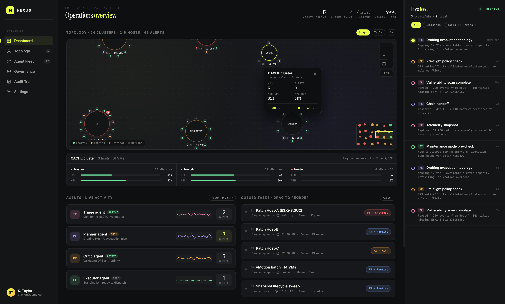
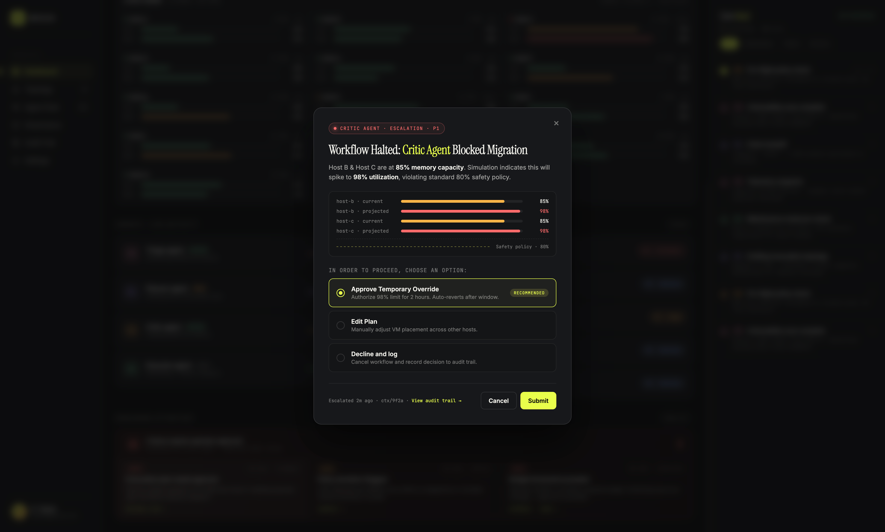
Three lessons on designing enterprise AI.
Friction is a feature
Consumer design optimizes friction away. Mission-critical AI requires intentional friction — escalation modals, explicit handoffs — at the exact moments where speed would be a liability.
Transparency beats magic
Operators need spatial awareness of where agents are working and chronological auditing of what they did. Opaque automation erodes trust the moment something goes wrong.
Focus over status
Specific intents ("Evacuating Host-A") transform AI from opaque to collaborative. Status indicators tell you the system is alive; named intents tell you what it's actually trying to do.